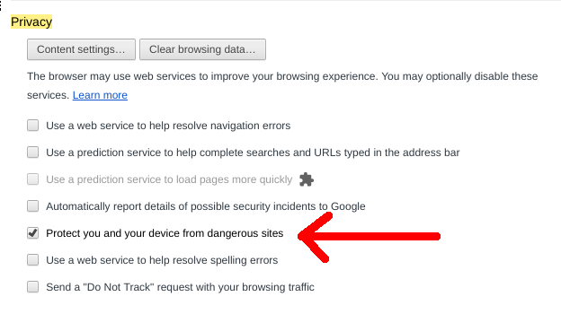

Якщо ви хочете відредагувати цю статтю, або запропонувати свої власні, відвідайте наш репозиторій git за ланкою Codeberg. Всі зміни мусять підпорядковуватись ліценізії CC0, щоб бути прийнятими.

Після налаштування Iridium згідно цього ґайду його рівень відстеження зменшується якось так:
Iridium має лише один відстежувач, тому єдину річ яку треба зробити це відключити google safebrowsing. Спершу, вимкніть ваш інтернет, або забороніть Iridium підключатись до інтернету, поки ви вимикаєте цей відстежувач, щоб він не зробив ніяких запитів до тог, як буде відключений. Потім, вимкніть "захистіть мене та мій пристрій від небезпечних сайтів"(protect you and your device from dangerous sites) в розширених налаштуваннях (advanced settings).
Якщо ви хочете відредагувати цю статтю, або запропонувати свої власні, відвідайте наш репозиторій git за ланкою Codeberg. Всі зміни мусять підпорядковуватись ліценізії CC0, щоб бути прийнятими.